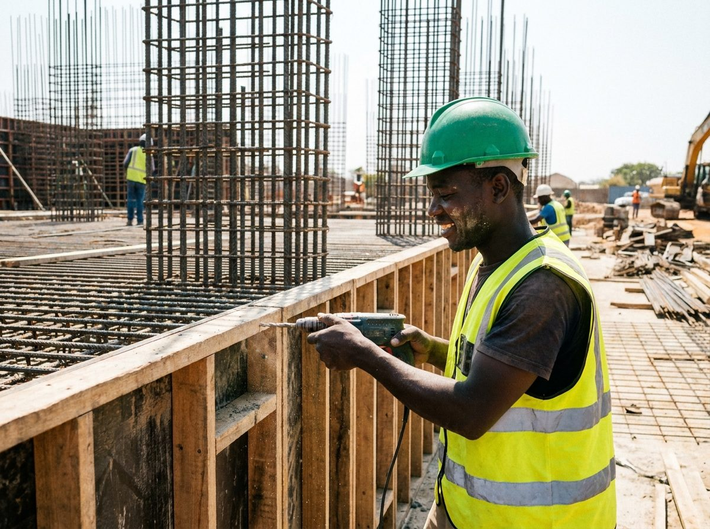

Construction
May 28, 2026
7 min read
A Practical Guide to Building Your Home in Kenya

Once you own a plot, the next big decision is how to build on it well, on budget, on time, and without cutting corners that come back to haunt you. This guide covers the approvals you need, how to choose the right people to manage the project, realistic cost expectations, and the mistakes that cost Kenyan homeowners the most money.
1. Get Your Approvals in Order First
Before any foundation is dug, your project needs sign-off from two main authorities:
- County government approval, you must submit architectural and structural drawings to your county's physical planning and building inspectorate department to obtain approved building plans and a construction permit. This confirms your design meets zoning, setback and coverage rules for that area.
- NCA registration for contractors, the National Construction Authority requires all contractors handling projects above a minimum threshold to be registered and licensed. Always ask for your contractor's NCA registration certificate and confirm it is current before signing anything.
Skipping approvals might save time upfront, but county inspectors can halt or demolish unapproved structures, and insurers and future buyers will also want to see a paper trail of approved plans.
2. Contractor vs Project Manager, Which Do You Need?
There are two common ways to run a build:
- A main contractor takes full responsibility for the build under a single contract, one point of accountability, generally simpler to manage, but you have less visibility into individual costs.
- A project manager (or clerk of works) represents your interests, hires and supervises specialist subcontractors (masons, electricians, plumbers) directly on your behalf, and tracks costs line by line. This route can save money but requires more of your own time and attention, or a trusted manager acting for you.
For most homeowners building for the first time, working with an established construction company that provides both project management and a proven team is the lower-risk option, it combines single-point accountability with transparent cost tracking.
3. Typical Cost-Per-Square-Foot Ranges
Construction costs vary by region, finish level and design complexity, but as a general guide for a standard residential build in peri-urban Kenya (2026 estimates):
- Basic/economy finish, roughly KSh 25,000–35,000 per square metre (masonry walls, standard tiles, basic fittings).
- Mid-range finish, roughly KSh 40,000–55,000 per square metre (better tiling, gypsum ceilings, upgraded sanitary ware, quality doors and windows).
- High-end/luxury finish, KSh 60,000+ per square metre (imported finishes, structural features like double-height spaces, premium fittings, landscaping).
Always get itemised quotations (a Bill of Quantities) rather than a single lump-sum figure, it makes it far easier to compare contractors fairly and to track spending against budget as the project progresses.
4. Foundation Types for Different Soil Conditions
The right foundation depends heavily on your soil. A geotechnical/soil test before design finalisation is cheap insurance against future cracking or settlement:
- Strip foundations, suitable for firm, stable soils and lighter structures; the most common and cost-effective choice for standard single or double-storey homes.
- Raft foundations, used where soil bearing capacity is low or inconsistent, spreading the building's load over a wide concrete slab.
- Pad and pile foundations, needed on expansive black cotton soils (common in parts of Kajiado, Machakos and other areas) or where the water table is high, transferring load down to more stable strata.
Building on black cotton soil without the correct foundation design is one of the most common, and expensive, mistakes homeowners make in Kenya.
Phased Building to Manage Cashflow
Not everyone can fund a full build in one go, and that is perfectly workable if planned properly. A common phased approach is:
- Substructure, foundation, ground beams and slab.
- Superstructure to roof level (walling, roofing, windows and doors installed to make the structure weatherproof).
- First-fix services, plumbing and electrical conduits before plastering.
- Finishes, plastering, painting, tiling, second-fix fittings.
Building to "lock and key" stage (weatherproof shell) first, then finishing room by room as funds allow, is a practical way to spread cost over time without stalling the project indefinitely.
"A well-planned phased build, done with proper documentation at each stage, almost always costs less in the long run than rushing a full build and discovering design or budget problems halfway through."
5. Common Mistakes to Avoid
- Starting construction before plans are approved by the county.
- Hiring a contractor without checking references or NCA registration.
- Skipping a soil test and using a generic foundation design regardless of ground conditions.
- Paying large sums upfront without a payment schedule tied to verified milestones.
- Underestimating finishing costs, which typically account for 30–40% of total budget.
- Not budgeting a contingency (10% of total cost is standard) for unforeseen site conditions or price changes in materials.
Whether you are building a starter home or a multi-unit development, working with a team that manages design, approvals and construction under one roof reduces the coordination headaches that usually cause delays and cost overruns. Landplan.co.ke's construction arm handles everything from architectural drawings and county approvals through to final finishes, so you get one accountable partner from groundbreaking to move-in day.